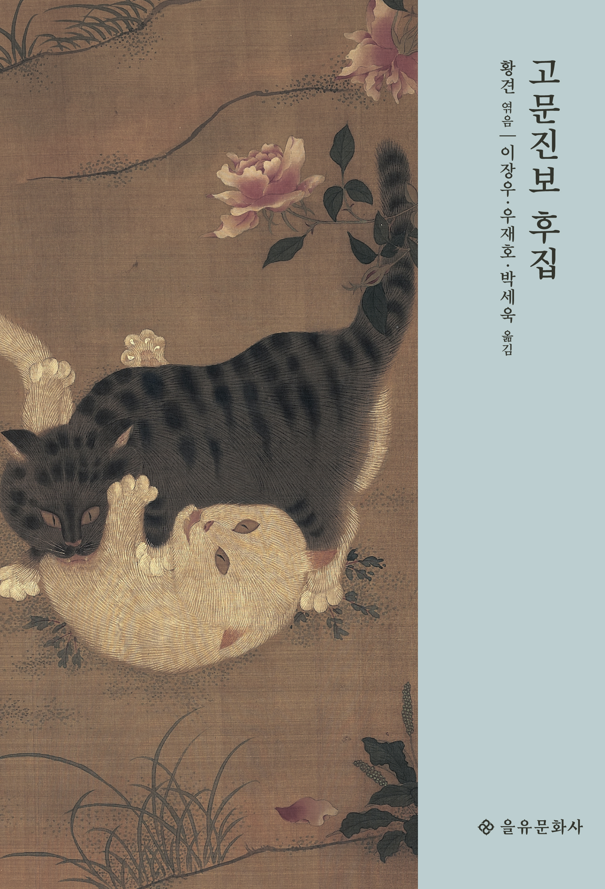
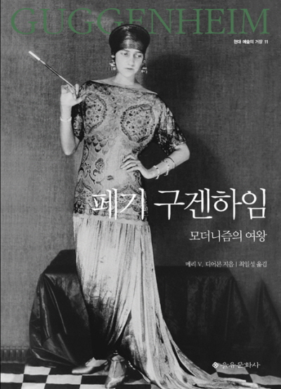
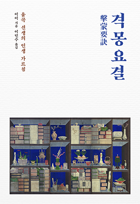
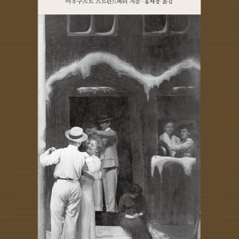
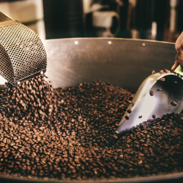
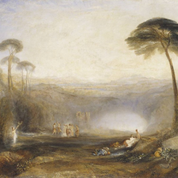

1945년(을유년)
을유문화사는 광복의 감격과 의의를 기리며
‘출판은 곧 건국 사업’이라는 사명감으로 첫발을 내딛었다
이달의
도서
을유문화사에서
발간된 도서목록입니다.
-

고문진보 후집
황견 ,이장우,우재호,박세욱도연명, 이백, 백거이, 왕희지, 소식 등 대가들의 명문장이 한자리에 ‘옛글 가운데서 참된 보물’만을 모은 고전 중의 고전
-

페기 구겐하임
메리 V. 디어본 ,최일성여성 컬렉터로서 페기 구겐하임의 진면모를 재조명하다. 과감한 결단이 바꾸어 놓은 예술 풍경
-

비극
테리 이글턴 ,정영목위대한 평론가 테리 이글턴의 최신작. 50년 넘게 ‘비극’을 탐구한 노비평가의 결실
-

격몽요결
이이 ,이민수“오직 한 가지 변할 수 있는 것이 있으니, 그것은 마음과 뜻이다” ― 「입지장」 중에서
월간 을터뷰
을유문화사에서 만난 사람들의 이야기
-
작가 김필영
가족은 ‘새로운 통로’인 것 같아요. 제가 모르는 세계에 들어갔고 그 안에서 완전히 새로운 세상을 접하게 되었거든요. 저는 평생 야구를 모르고 살았는데 남편 덕분에 트라웃과 오타니 선수를 알게 되었어요.
자세히보기 -
조명 디자이너 조수민
하늘을 보니 규모, 깊이, 색깔, 밝기 등을 설계자로서 도저히 따라갈 수 없다는 생각이 들었습니다.
자세히보기 -

서양고전학자 김헌
세계화가 추진되고 있는 문명사회의 흐름 속에서, 주도권을 잡고 있는 것은 서양이라고 할 수 있습니다. 그럴 때 주목해야 하는 것이 서양 문화의 뿌리라고 할 수 있는 그리스·로마 고전인데요.
자세히보기
을유의
소식
을유문화사의
새로운 소식을 만나보세요.
-

아우구스트 스트린드베리, 『꿈의 연극』
입센과 더불어 북유럽을 대표하는 세계적인 극작가이자 스웨덴의 셰익스피어라고 불리는 아우구스트 스트린드베리는 끊임없이 새로운
-
[고통을 말하지 않는 법] 아이들은 기억한다
어느 날, 심야 라디오 방송에 다시아 블랙이 나온다. 그는 제2차 세계 대전 때 훤히 공개된 은신처에 머물며 살아남은 여성이다.
-

기막힌 커피 맛의 비결 적정 온도를 지키는 드립 케틀
나의 커피 사랑은 밖으로 소문나기 시작했다. 좋아하는 일과 병은 떠들고 다녀야 하는 게 맞다. 더 많이 알고 능력 있는 이들을 만나게
-
찰스 밍거스 : 소리와 분노
‘현대 예술의 거장’ 시리즈는 20세기를 전후한 문화 예술계에 큰 영향력을 끼친 국내외 거장 아티스트의 평전으로 구성된다.
-
쇼펜하우어의 행복론과 인생론 : 쇼펜하우어 철학의 정수를 담은 인생 수업
『쇼펜하우어의 행복론과 인생론』은 쇼펜하우어에게 세속적인 성공을 안겨 준 『소품과 부록Parerga und Paralipomena』을 우리말로
-

황금가지 제1권 제2권 : 인류학, 나아가 문학과 예술의 지평을 넓힌 세기의 고전
이 책은 고전 인문학자 제임스 조지 프레이저의 대작 『황금가지』 제3판 전 12권(1906〜1915)을 1922년에 프레이저 경이 직접 요약한